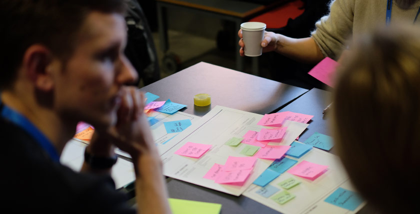

Thank you for considering submitting to Interaction 18.
Dissolving boundaries.
Building connections.
At Interaction 18 we want to engage a diverse group of speakers to come to Lyon and share their reflections and provocations on the value and potential of interaction design, shaping a collective point of view that looks at the maturity, meaning and evolution of our practice.
We propose three different levels for this deep conversation:
Micro: details that matter
Interaction design is always about sorting out the small details that make the overall experience better and unique.
What are our best practices? What technologies, tools and processes are mastering our craft?
Meso: systemic transformations
Interaction design is more and more often at the heart of transformation processes that invests companies, institutions and the entire society.
What are the most difficult challenges we should tackle? How can we apply design for strategic and systemic change?
Macro: identity and vision
Interaction design is playing an essential role in defining what human life could become, considering the potential of existing technologies and their endless applications.
What are our responsibilities moving forward? How can we evolve our thinking, skills and mindset to actively shape the long term vision?
Who is our audience?
We want to set a stage for advanced, more in-depth topics, so while the conference is open to every level, the majority of the audience is going to be senior designers, tech and creative directors, thought leaders, startup founders, teachers, and beyond.
Why should you submit to Interaction 18?
You will inspire people, and help shape the discipline of interaction design. You will also meet other design leaders from all around the world. More importantly, it will be fun!
Proposing a Talk
We are seeking different length talks to accommodate different scopes, approaches and insights.
From 7 minutes talks to describe one straightforward use-case or concept, to 15 minutes to expand over a single larger idea with examples, to 35 minutes with a very rich, full-fledged and well articulated concept or historical walkthrough.
Proposing a Workshop
Go one step further and consider an already experienced audience and do deep-dives on a topic from the very beginning.
We will have a mix of short (4h) and long (8h) workshops. You’ll be guiding your class through a specific topic, with a strong mix of hands-on exercises and lectures.
What do you have to prepare?
You will need to provide:
- Some information about yourself: your name, email, online presence, and a small biography that tells us more about you (250 words).
- Some optional details to help us assess a diverse lineup: your country, current situation, and gender.
- A title, a teaser, and a description (300 words) for your session.
- For the workshops: an outline of the activities (100 words).
- For the talks: 3 key takeaways (100 words), and the way you will engage with the audience (100 words).
- The target audience (100 words), their needed knowledge (100 words), and why this is relevant for them (100 words)
- An optional illustration representing the session (a picture, a sketch, whatever you think is self-explanatory).
- Your experience as a speaker, your experience on the topic (100 words), and how often you talked publicly about this topic.
- A link to a video that demonstrates your skills as a speaker (at least 1 minute - you can record one).
- Anything we could help you with, to improve your speaker experience at Interaction 18 (for example: translation, speaker coaching).
Please note that most material provided can be used on the website to promote you and your talk if it gets selected.
We will be giving you the opportunity to review it before publication.
How will we choose?
Your proposal will be peer reviewed by experts in the IxDA community or our workshop selection committee.
We will review based on quality, the speaker’s experience, and how well it aligns with the conference themes and other presentations.
Dates
- September 13th, 2017 at 11:59pm CET (Central European Time): deadline for submitting the proposals for both talks and workshops.
- October 13th, 2017: we will inform all workshop applicants if they have been selected.
- November 3rd, 2017: we will inform all talk applicants if they have been selected.
Diversity and Accessibility
We want Interaction 18 to truly represent the diversity and the multiple facets of interaction design. Each voice is important.
If you’d need support for translation, coaching, have any doubts or questions, or if we’ve missed something important, please reach out.
Speaker information
- As a speaker, you will receive an honorarium, and a free ticket for the conference.
- As a workshop speaker, you get 50% of the proceeds from your workshop ticket sales.
- Please read our Code of Conduct.
Ready to participate?
Great! We are looking forward to reading your proposal. You can submit it on our Submittable platform.
Let’s stay in touch?
We will disclose more about the theme, and organize three Q&A sessions in June, July and August.
To keep up to date, subscribe to this call-for-proposal-only newsletter (We’ll not spam):